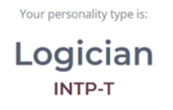
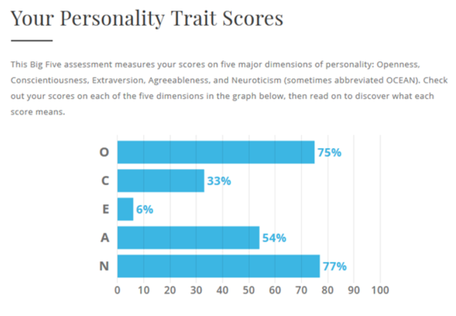
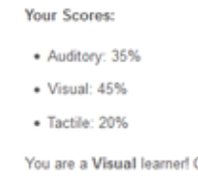

Johnny's Profile
RMIT ID: s3599253
RMIT EMAIL: s3599253@student.rmit.edu.au
About Me
My name is Johnny and I am 23 years old and I am born in May 1997. I am studying Bachelor of Business (Information Systems) and currently in my last semester. My background is Vietnamese. I have a family of four which includes my parents, my sister who is 2 years older than me and myself. I also have a pet dog whose breed is Maltese and Shih Tzu. I am currently working part time at a bank in the branch as a Customer Service Specialist. I like to walk my dog and go to the gym in my spare time. My interest in IT began when I was young as I was always interested in electronics. I would 1play around with programs and hardware as well as fixing any computer issues for my family which I thoroughly enjoyed. I then started to learn about programming and coding and would learn basic programming by myself online. I have had exposure to programming language Python, Web Development as well as SQL which were mostly learnt through my university courses.
Personality Tests
  As the results show, I am pretty introverted and possess an analytical mindset where I am able to think abstractly and in complex ways. My results of my learning style show that I am a visual learner. It is best for me to learn by sight through making flashcards, writing down key ideas, or colour code things. I generally prefer to work autonomously. When forming a team, I am pretty flexible with whoever I get, however I would like a person who is a bit extroverted to be able to balance out our team.
Ideal Job
My ideal job is Business Analyst at Kogan. The skills required are:
- University degree in relevant IT field & outstanding academic record
- Problem-solving skills with high attention to detai
- Critical thinking and aptitude for analytics
- Establish deep understanding of any business function
- Communicate effectively
- Microsoft Excel
- Data modelling/data visualisations
- Experience with BI platforms and SQL